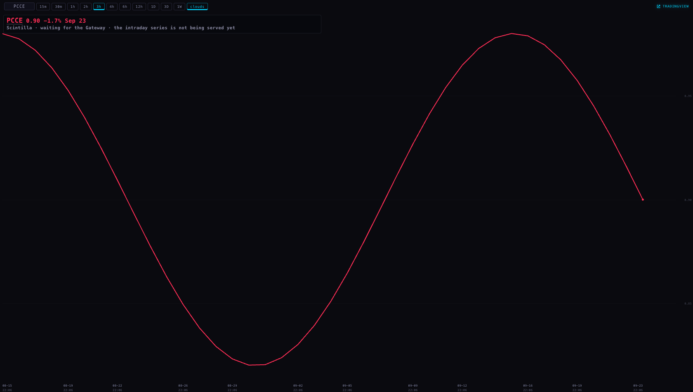
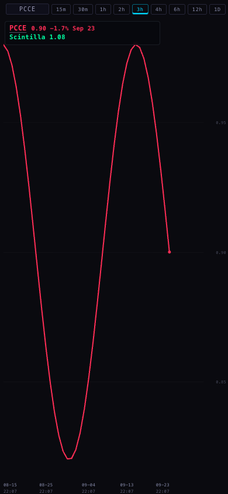

Put / call from your own IBKR
You asked whether the IB Gateway can give us put/call. It can — but not as a ratio.
IBKR publishes no put/call number anywhere. What it does publish, for every underlying, is
how many calls and how many puts traded today. Divide one by the other and you have the ratio —
per ticker, per cohort, per sector, and for the whole desk — updating through the session, which
Cboe's number never does.
Tonight none of it is running, and the reason is not the code: your Gateway lost its link to IBKR.
This page says exactly what was built, what it needs from you, and what is still unproven.
What IBKR can and cannot give
Can
- The day's call volume and put volume, per underlying. In IBKR's language this is "generic tick 100",
which arrives as tick type 29 (calls) and 30 (puts). This is the whole basis of everything below.
- Open interest, calls and puts (generic tick 101 → types 27 and 28). A slower, positioning-shaped view.
- The NYSE internals — TICK, TRIN, advance/decline — which the earlier lane already built for.
Cannot
- A put/call ratio. IBKR does not compute one. Anyone who says their IBKR feed "has put/call" means
these two volumes.
- A market-wide total. IBKR answers per underlying, one line at a time. A market number is something
we build by adding up names — which is why the scope is the 364 names Scintilla already carries,
not "the entire market". You said you did not want to compute and store the whole market. You don't have to.
- Everything at once. IBKR limits how many live lines you may have open simultaneously (commonly 100).
The reader therefore rotates: subscribe to a batch, read it, cancel it, move on. It measures the real limit on
your account rather than trusting the number.
What you would actually get
- Per ticker: AAPL's own put/call, NVDA's own, and so on, for all 364.
- Per cohort: your own groupings, added up inside each one.
- Per sector: the same, by company sector. ETFs are left out of sectors — an ETF has no sector of its
own — and so are the index names.
- Two headline lines: a Scintilla equity put/call (the single names) and a
Scintilla index put/call (SPX, SPY, QQQ, IWM). They never mix: index options are a different animal and
would swamp the equity line.
Your words were "having a put call my cohort by sector by ticker would be legendary". That is the shape of it,
and it is the part no one can buy off a shelf, because the cohorts are yours.
The subscriptions — and an honest warning about this list
Nothing on this list is confirmed. IBKR names the subscription you are missing in its own refusal
message, and tonight we could not get a single refusal out of it, because the link was down. So a probe was
written that asks for every line we need and prints IBKR's exact words back. Your coordinator runs it the
moment the Gateway is healthy, and then the list below stops being an expectation.
- OPRA (US Options Exchanges) — expected to be what unlocks the call/put volumes. You mentioned
"$1.50 a month"; that matches OPRA's non-professional price. Not verified tonight: IBKR's pricing page
refuses to answer anything but a real browser (it returned 403), so your own Client Portal is the authority.
- NYSE Global Index Feed (~$2/month non-pro) — expected to be what unlocks TICK, TRIN and
advance/decline. This is the "$2… I'll do on my own time" one.
- VIX — you do not need to buy this. The chart API already serves VIX from FMP.
Why the Gateway keeps dropping when you trade
You asked: "the ib gateway has to work even if im logged in to my account to trade… is that why i
established the other account??" — Yes. IBKR allows one live session per username. TWS, the phone
app, Client Portal and the Gateway all count as that one session, so when you log in to trade, IBKR ends the
Gateway's session. The Gateway is not broken; it was displaced.
The fix is a second username used only by the Gateway, which you may already have created. In Client
Portal: Settings → Users & Access Rights → Users, add (or re-activate) a user, give it market data and
API access and no trading permission, then put the market data subscriptions on that username under
Settings → Market Data Subscriptions — IBKR's model is that subscriptions belong to a user, not to the
account. Then log the Gateway in with it and keep your own username for trading.
Unverified, and worth two minutes of your time: whether IBKR offers to share your existing
subscriptions with the second user or charges again. The page tells you once the user is selected. Only you
should be logging in to your own Client Portal.
What is actually broken tonight
Measured twice, at 00:47Z by your coordinator and again at 01:05Z here, with a read-only connection that
asked for nothing but contract lookups:
2110 Connectivity between Trader Workstation and server is broken
2103 Market data farm connection is broken:usfarm
2157 Sec-def data farm connection is broken:secdefil
2107 HMDS data farm connection is inactive
The Gateway itself is running and its API socket answers on 127.0.0.1:4001 — note 4001, even
though your jts.ini says 4000. But every contract lookup came back empty, including plain SPY.
Until that link is restored, no put/call number can exist, and no subscription question can be answered.
Nothing was touched: not the Gateway's settings, not its login, not its windows.
The arithmetic, and the traps it avoids
- The volumes are running day totals. They start at zero each morning and only rise. A number that
falls inside one session is a bad read, not selling — it is refused and flagged, never stored.
- The reset at 09:30 is not a fall. A new session starts fresh, and yesterday's total never leaks in.
- No divisor, no ratio. If no calls traded, the answer is "no call volume", never
0.00.
- Coverage is part of the number. Because the reader rotates, a desk-wide reading is always
"as of 14:32, 312 of 364 names". Anything not read is named, not quietly dropped.
- A halted name goes stale and steps out of the live aggregate by name, rather than being counted
with a frozen number.
- Against Cboe: we compare on the sessions both printed, one reading per session, and report the
average gap. They are not the same population — Cboe counts every option on its exchanges, we sum the names
you carry — so a steady offset is expected, and a steady offset is the useful part. We measure it; we
never claim agreement.
All of that is 12 tests that run with no network and no Gateway, against a fixture of one rotating sweep.
The fixture is synthetic and labelled as such: there is no recorded IBKR tick to test against yet, because
the Gateway has never answered. The first healthy session replaces it with a real recording.
The pane
The put/call pane now shows both: Cboe's published session, and Scintilla's own intraday line beneath
it, each named so neither can be mistaken for the other. Up is green and down is red, the same rule as every
other pane.
Until the Gateway feeds it, the pane says so in words — and says which silence it is: the series
is not being served yet, the Gateway is not running, the Gateway is up but IBKR's link is broken, IBKR refused
the lines for want of a subscription, or nothing has been collected yet this session. "No data" is not
something you can act on; "IBKR's link to the Gateway is broken" is.

Today's truth, at 1680 wide: Cboe's number is painted and dated; underneath, in grey, "Scintilla ·
waiting for the Gateway · the intraday series is not being served yet".

What Monday looks like, on a phone: Cboe's 0.90 in red above Scintilla's own 1.08 in green. The
first draft painted this straight over the Cboe number and cut it off at the edge; the screenshot is how that
was caught.
What could be wrong
- The subscription list is an expectation, not an answer. Only IBKR's refusal text settles it.
- The tick numbers are from IBKR's documentation, not from your Gateway. That these ticks arrive for an
ordinary single name is unproven until one session runs.
- The line limit is assumed to be around 100 until the probe measures yours.
- Coverage is not on the pane yet. The pane will print "312 of 364" the moment the chart API carries
that field; today the payload has no room for it, so it shows the number without the count.
- The proof's data is synthetic. The pane is real, the browser is real, the numbers in the screenshots
are made up on purpose.
- A laptop is not a server. Collection runs only while this MacBook is awake.
What I did not do
- Nothing was deployed, pushed or merged, and no database change was applied. The migration and its
rollback are written and waiting for your coordinator.
- The Gateway was not touched — no setting, no login, no window, and no restart.
- No order call exists anywhere in this code, and nothing asks IBKR for an account, a position or an
execution. The connection is the bare handshake, deliberately, so that the usual start-up requests for your
positions are never sent.
- The collector was not started, and the scheduler file was written but not installed.
- No live put/call number was produced, because none could be.
The runbook
- You: restore the Gateway's link (it usually returns by itself; a re-login is the next step), and set
up the second username above.
- Coordinator: run the probe —
/usr/bin/python3 probe-subscriptions.py --json probe.json —
and read IBKR's own words. That is the shopping list, in IBKR's language.
- You: buy exactly what it named. Probably OPRA; possibly the NYSE index feed as well.
- Coordinator: re-run the probe to confirm the refusals are gone, then
option-volume.py --measure-lines to learn your real simultaneous-line limit.
- Coordinator: apply the migration, install the LaunchAgent, and let one full session collect.
- Then, and only then: the pane's intraday line appears beside Cboe's, and the page's tracking
measurement starts having something to measure.